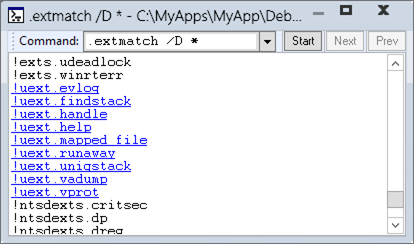

The .extmatch command displays extension commands exported by the currently loaded extension DLLs that match the specified pattern.
.extmatch [Options] Pattern
Parameters
- Options
-
Specifies the searching options. You can use one or more of the following options:
- /e ExtDLLPattern
-
Limits the enumeration to extension commands exported by extension DLLs that match the specified pattern string. ExtDLLPattern is matched against the extension DLL filename.
- /n
-
Excludes the extension name when the extensions are displayed. Thus, if this option is specified, then only the extension name itself will be displayed.
- /D
-
Displays the output using Debugger Markup Language (DML). In the output, each listed extension is a link that you can click to get more information about the extension. Not all extension modules support DML.
- Pattern
-
Specifies a pattern that the extension must contain. Patterncan contain a variety of wildcard characters and specifiers. For more information about the syntax, see String Wildcard Syntax.
Environment
|
Modes |
User mode, kernel mode |
|
Targets |
Live, crash dump |
|
Platforms |
All |
Remarks
To display a list of loaded extension DLLs, use the .chain command.
Here is an example of this command, showing all the loaded extension DLLs that have an export named !help:
0:000> .extmatch help !ext.help !exts.help !uext.help !ntsdexts.help |
The following example lists all extension commands beginning with the string "he" that are exported by extension DLLs whose names begin with the string "ex":
0:000> .extmatch /e ext* he* !ext.heap !ext.help !exts.heap !exts.help |
The following example lists all extension commands, so we can see which ones support DML.
